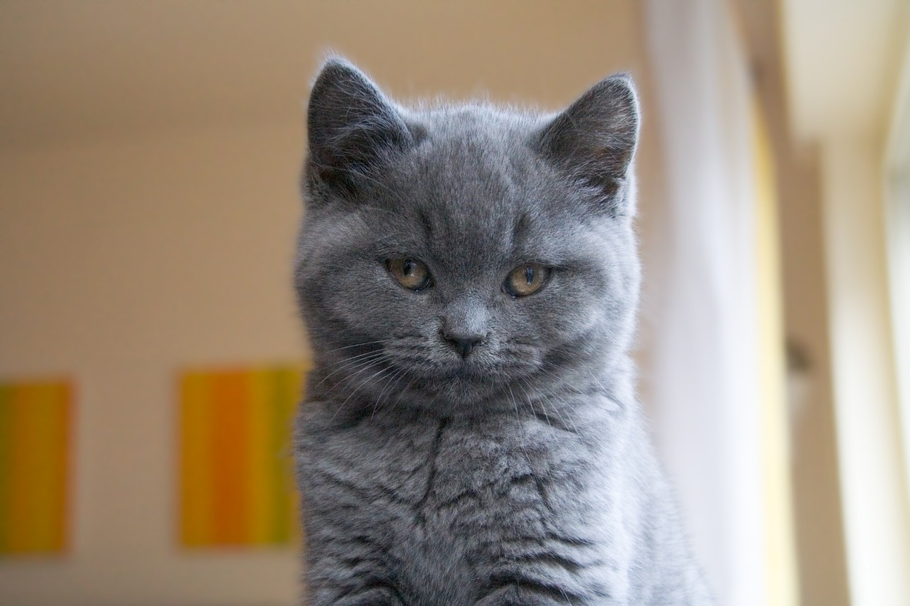

The Chartreux cat is a shorthair with a loving personality. Though they may not be very vocal, they still show lots of love through their body language. They have very fast reflexes when it comes to playing with toys. They have a very dense, 'wooly' coat that is in fact somewhat waterproof.
